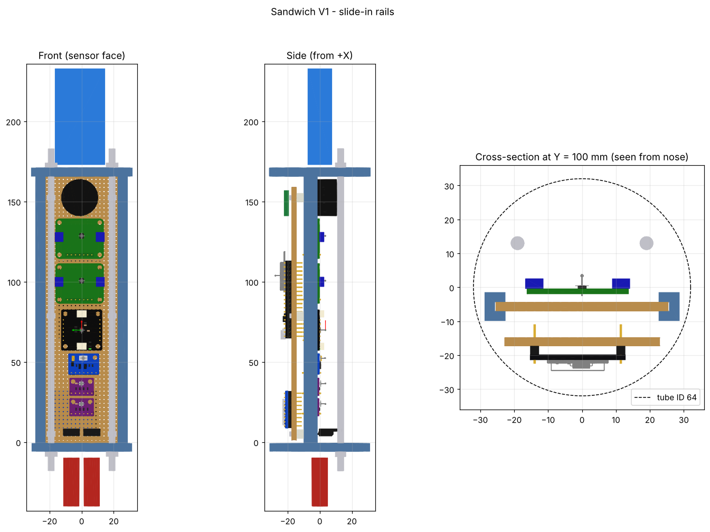
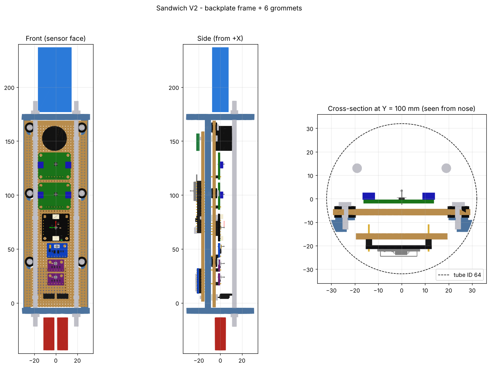
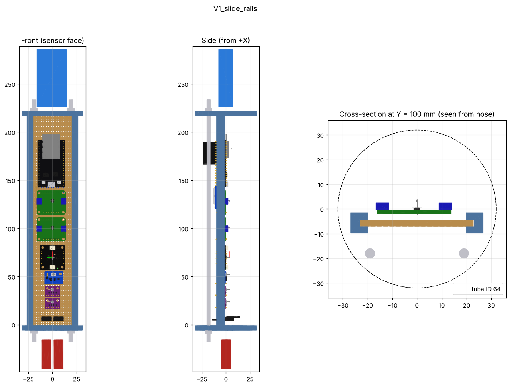
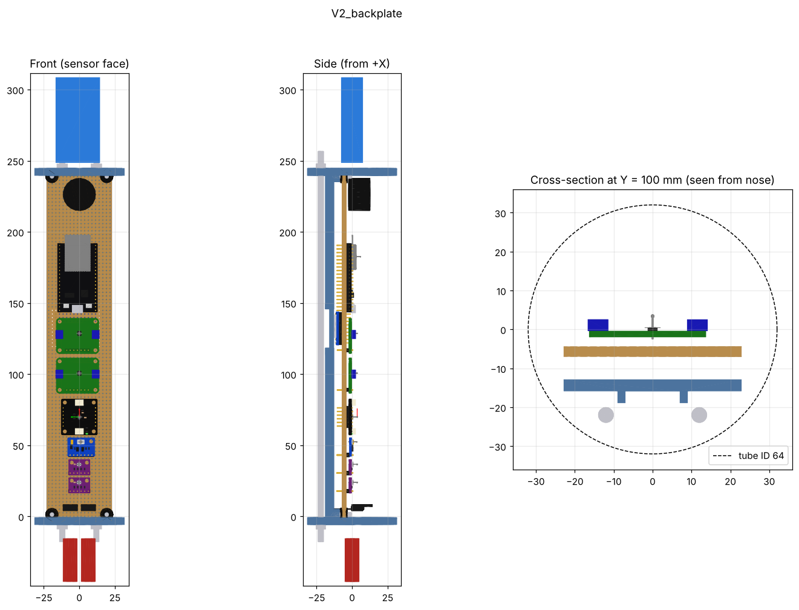

TeamRocket Avionics Bay
Flight computer bay for a Ø70 mm (64 mm ID) rocket. Two perfboards sit back to back, both with parts facing out. The sensor board carries three IMUs and three barometers with every IMU chip centred on the rocket axis, plus the pyro MOSFETs and buzzer. The second board carries the ESP32, SD logging and the 3.3 V buck. Two removable printed mounts.
Interactive 3D layout
Every board as a real 3D model. Move or rotate parts hole by hole, flip them to the back face, see IC-to-axis offsets and collisions live, and switch between the two mount designs.
[ 2S 600 mAh LiPo ]
═══════════ TOP CAP Ø63.4 ═══════════ switches · battery feed
board 1 (front) ┃8mm┃ board 2 (back)
buzzer ┃ ┃ buck
BMI270 ×2 ┃ ← chips on the axis
LSM6DSO ┃ ┃ ESP32
MS5611 · BMP×2 ┃ ┃ SD card
FET A · FET B ┃ ┃
═══════════ BOTTOM PLATFORM ══════════ charge wires
(charge A) (charge B)
2 × M4 rods · 6 × M3 standoffs
Bay mounts — sandwich layout (current)
Board 1 (sensors, MOSFETs, buzzer) and board 2 (ESP32, SD, buck) are joined by six M3 × 8 standoffs into a stiff box. V1: board 1's edges run in two full-length grooved rails, and the sandwich slides down from the top. V2: board 1 bolts through six rubber grommets, no more than 76 mm apart, to an open frame behind its edges. Board 2 nests inside the frame, and the sandwich lifts straight off. Print in PETG. Both are interference-checked and stay within R 31.4 mm.


| File | What it is | Size |
|---|---|---|
| S1_lower_platform_with_rails.step | V1 — slide-in rails · Part CAD | 111 kB |
| S1_lower_platform_with_rails.stl | V1 — slide-in rails · Print file | 68 kB |
| S1_top_cap.step | V1 — slide-in rails · Part CAD | 76 kB |
| S1_top_cap.stl | V1 — slide-in rails · Print file | 104 kB |
| Sandwich_V1_slide_rails_ASSEMBLY.step | V1 — slide-in rails · Assembly (mount + both boards, public stand-ins) | 40.0 MB |
| Sandwich_V1_views.png | V1 — slide-in rails · Preview: front, side, cross-section | 157 kB |
| S2_lower_platform_with_frame.step | V2 — backplate frame + 6 grommets · Part CAD | 186 kB |
| S2_lower_platform_with_frame.stl | V2 — backplate frame + 6 grommets · Print file | 221 kB |
| S2_top_cap.step | V2 — backplate frame + 6 grommets · Part CAD | 64 kB |
| S2_top_cap.stl | V2 — backplate frame + 6 grommets · Print file | 104 kB |
| Sandwich_V2_backplate_frame_ASSEMBLY.step | V2 — backplate frame + 6 grommets · Assembly (mount + both boards, public stand-ins) | 40.8 MB |
| Sandwich_V2_views.png | V2 — backplate frame + 6 grommets · Preview: front, side, cross-section | 196 kB |
| README.md | Board sizes, hardware list, assembly and removal | 2 kB |
| mount_report.json | Mount dimensions (boards, rods, grommets, standoffs) | 1 kB |


Bay mounts — single long board (superseded)
The earlier one-board layout (45.7 × 246 mm), kept for reference. It is still available as "Single board (old)" in the viewer. V1: the perfboard slides down grooved side rails into pockets. V2: the perfboard bolts to a printed backplate through four rubber grommets. Print in PETG.


| File | What it is | Size |
|---|---|---|
| V1_lower_platform_with_rails.step | V1 — slide-in rails · Part CAD | 111 kB |
| V1_lower_platform_with_rails.stl | V1 — slide-in rails · Print file | 68 kB |
| V1_slide_rails_ASSEMBLY.step | V1 — slide-in rails · Assembly (mount + all boards, public stand-ins) | 34.9 MB |
| V1_slide_rails_views.png | V1 — slide-in rails · Preview: front, side, cross-section | 150 kB |
| V1_top_cap.step | V1 — slide-in rails · Part CAD | 72 kB |
| V1_top_cap.stl | V1 — slide-in rails · Print file | 92 kB |
| V2_backplate_ASSEMBLY.step | V2 — backplate + grommets · Assembly (mount + all boards, public stand-ins) | 35.8 MB |
| V2_backplate_views.png | V2 — backplate + grommets · Preview: front, side, cross-section | 181 kB |
| V2_lower_platform_with_backplate.step | V2 — backplate + grommets · Part CAD | 189 kB |
| V2_lower_platform_with_backplate.stl | V2 — backplate + grommets · Print file | 164 kB |
| V2_top_cap.step | V2 — backplate + grommets · Part CAD | 52 kB |
| V2_top_cap.stl | V2 — backplate + grommets · Print file | 90 kB |
| mount_report.json | Mount dimensions (perfboard size, rods, holes) | 1 kB |


Board models
Each board has a magenta IC_CENTRE_MARKER through the sensing chip. Frame: origin at the PCB's bottom-left corner, Z up, PCB bottom at z = 0.
| Module | Board | IC x (mm) | IC y (mm) |
|---|---|---|---|
| BMI270 | 7Semi/EVE BMI270 Breakout ES-12135 30x25 (Evelta link) | 16.27 | 14.25 |
| LSM6DSO | BOARD NOT IDENTIFIED - IC only, origin = IC centre | 0 | 0 |
| BMP280 | Generic GY-BMP280-3.3 6-pin (Robocraze listing) | 6.6 | 6.8 |
| MS5611 | Generic GY-63 (7-pin) | 10.8 | 10.1 |
| ESP32-WROOM-32E | Bare module 18x25.5 (Espressif official STEP) | 7.5 | 10.29 |
| File | What it is | Size |
|---|---|---|
| BMI270_7Semi-EVE-Breakout_marked.step | BMI270 · 7Semi/EVE breakout ES-12135 (built from vendor dimensioned render) | 592 kB |
| LSM6DSO_SmartElex-6DoF_marked.step | LSM6DSO · SmartElex 6DoF (from SparkFun SEN-18020 Eagle board, CC BY-SA) | 960 kB |
| BMP280_GY-BMP280_public.step | BMP280 · GY-BMP280 6-pin (public stand-in) | 612 kB |
| MS5611_GY-63_public.step | MS5611 · GY-63 (public stand-in) | 601 kB |
| ESP32-DevKitC-V4_public.step | ESP32 · DevKitC V4 (public stand-in, official Espressif WROOM-32E module) | 20.6 MB |
| ESP32-WROOM-32E_marked.step | ESP32-WROOM-32E bare module (Espressif model, QFN centre marked) | 19.1 MB |
| SD_Waveshare_MicroSD_Board.step | Waveshare Micro SD storage board (from vendor drawing), pins into perfboard | 437 kB |
| SD_Waveshare_MicroSD_Board_outward-pins.step | Waveshare Micro SD board, header pins outward | 436 kB |
| LiPo_2S_600mAh_PLACEHOLDER.step | 2S 600 mAh LiPo placeholder block | 83 kB |
| IC_centres.csv | IC centre coordinates for every board (mm, PCB-corner frame) | 1 kB |
| BMI270_7Semi-EVE-Breakout_marked.png | Top view · BMI270_7Semi-EVE-Breakout_marked | 37 kB |
| LSM6DSO_SmartElex-6DoF_marked.png | Top view · LSM6DSO_SmartElex-6DoF_marked | 39 kB |


The GY-BMP280, GY-63 and DevKitC models in the private build come from GrabCAD, whose files can't be republished. This site uses stand-ins in the same frames. Download the originals yourself (BMP280, GY-63, DevKitC V4) and run the re-orient scripts below.
Layout data
| File | What it is | Size |
|---|---|---|
| layout_sandwich_from_viewer.json | Sandwich layout: exact placements, board numbers and standoffs, exported from the viewer | 11 kB |
| layout_from_viewer.json | Exact board placements exported from the viewer | 7 kB |
| sensor_plate_placement_v0.csv | First on-axis plate: pin-1 holes and IC offsets | 0 kB |
Third-party source models
Unmodified models used to build the boards. KiCad and Espressif libraries and SparkFun hardware are CC BY-SA 4.0; credit and license files are included.
| File | What it is | Size |
|---|---|---|
| Bosch_LGA-14_3x2.5mm_P0.5mm.step | KiCad · Bosch LGA-14 (BMI270) | 121 kB |
| LGA-14_3x2.5mm_P0.5mm_LayoutBorder3x4y.step | KiCad · LGA-14 2.5×3 (LSM6DSO) | 120 kB |
| Bosch_LGA-8_2x2.5mm_P0.65mm_ClockwisePinNumbering.step | KiCad · Bosch LGA-8 (BMP280) | 74 kB |
| TO-220-3_Vertical.step | KiCad · TO-220-3 vertical (IRLZ44N / IRL530) | 85 kB |
| ESP32-WROOM-32E.STEP | Espressif kicad-libraries · ESP32-WROOM-32E | 12.5 MB |
| SparkFun_6DoF_LSM6DSO.brd | SparkFun · Qwiic 6DoF LSM6DSO Eagle board | 297 kB |
| SparkFun_LICENSE.md | SparkFun license | 3 kB |
| KiCad_Espressif_LICENSE.md | Espressif / KiCad library license (CC BY-SA 4.0 with exception) | 1 kB |
Build scripts
CadQuery (Python). Everything above can be regenerated from these.
| File | What it does | Size |
|---|---|---|
| build_models.py | BMI270 / LiPo / IC-only models + marker | 10 kB |
| build_lsm6dso.py | LSM6DSO board from SparkFun .brd | 5 kB |
| build_sd_board.py | Waveshare SD board | 2 kB |
| build_public_standins.py | Public stand-ins for GrabCAD boards | 5 kB |
| build_bmp280_from_grabcad.py | Re-orient + mark your own GrabCAD BMP280 download | 4 kB |
| reorient_mark_grabcad.py | Re-orient + mark your own GY-63 / DevKitC downloads | 3 kB |
| build_sandwich_mounts.py | Both sandwich mounts (V1 rails, V2 frame + grommets) | 14 kB |
| clash_check.py | Interference check: printed parts vs every other solid in an assembly | 1 kB |
| export_sandwich_mount_meshes.py | Sandwich mount meshes for the viewer | 2 kB |
| dump_layout_from_viewer.js | Export the viewer layout to JSON (headless, Playwright) | 2 kB |
| build_bay_mounts.py | Both bay mounts (V1 rails, V2 backplate) | 12 kB |
| render_views.py | Front/side/section previews | 2 kB |
| export_viewer_meshes.py | Board meshes for the viewer | 2 kB |
| export_to220_mesh.py | TO-220 mesh | 1 kB |
| export_mount_meshes.py | Mount meshes for the viewer | 2 kB |
| inspect_step.py | List solids + bounding boxes in a STEP | 1 kB |